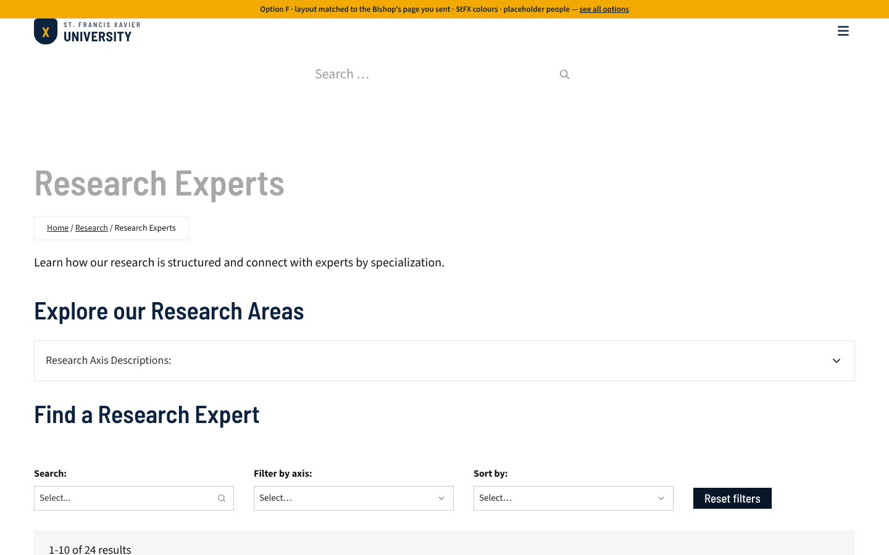
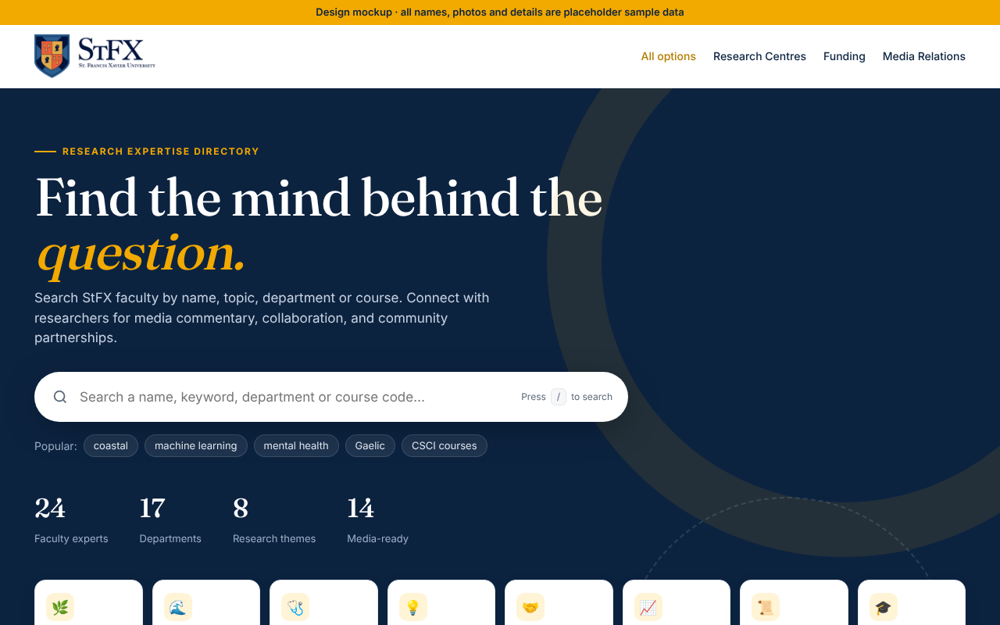
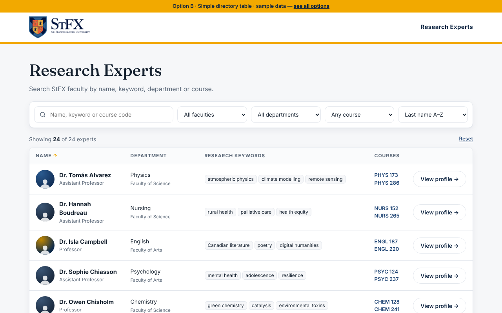
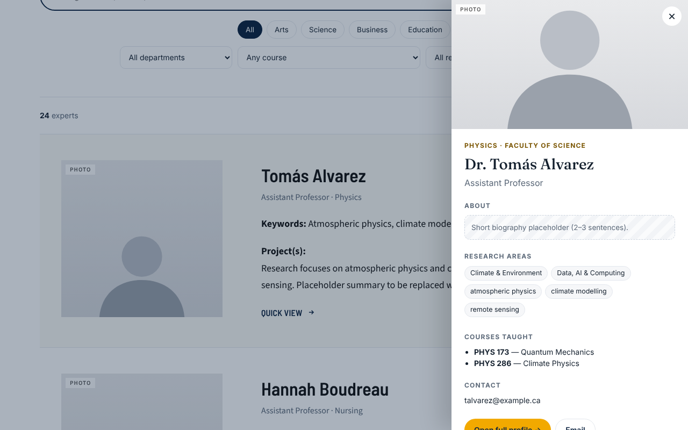

Option F · Reference match
Bishop’s-style layout
Matches the layout of the Bishop’s Research Experts page, in StFX colours.
- Search, “Filter by axis”, “Sort by” and “Reset filters” in one row
- Photo left; name, Keywords, Project(s) and “See profile” right
- 10 per page with numbered pagination

Option A
Showcase
The most feature-rich, eye-catching version.
- Big hero search + research theme tiles
- Sidebar filters with live counts, A–Z bar, grid/list toggle
- Rich profile page with related experts

Option B
Simple table
A clean, compact staff-directory list. Fastest to scan.
- All filters in one row
- Click column headings to sort
- Stacks into cards on phones

Option D
List + quick view
Option F’s one-per-row list with large photos. Clicking an expert opens a side panel without leaving the page.
- Big search box + faculty chips + more filters
- One expert per row with a large photo
- Quick-view panel, then “Open full profile”